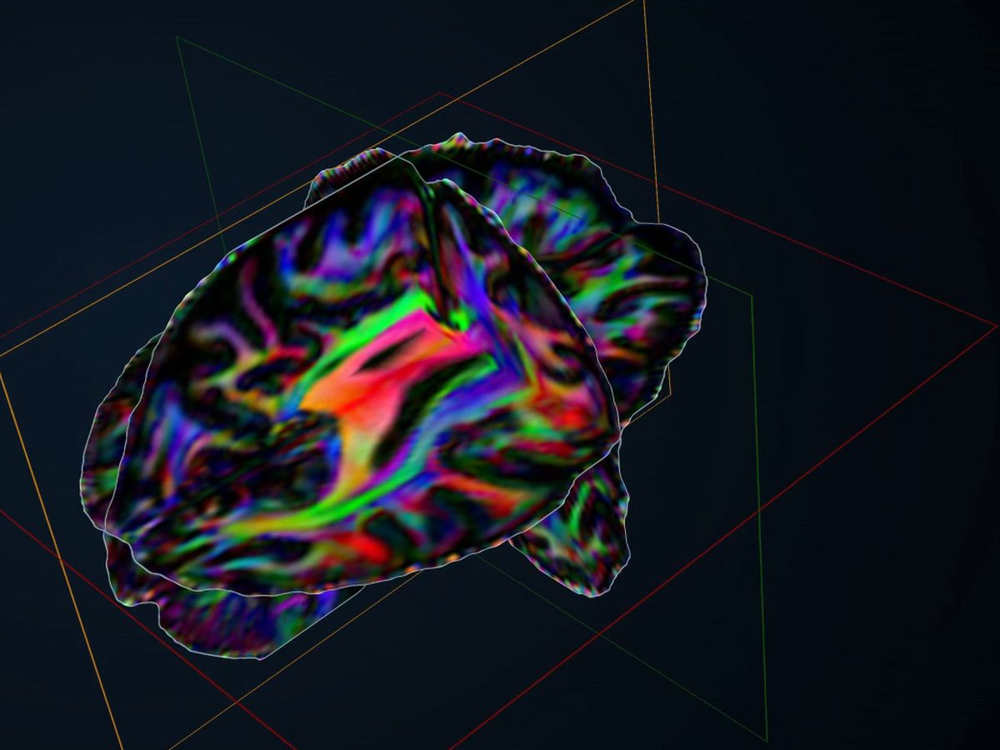
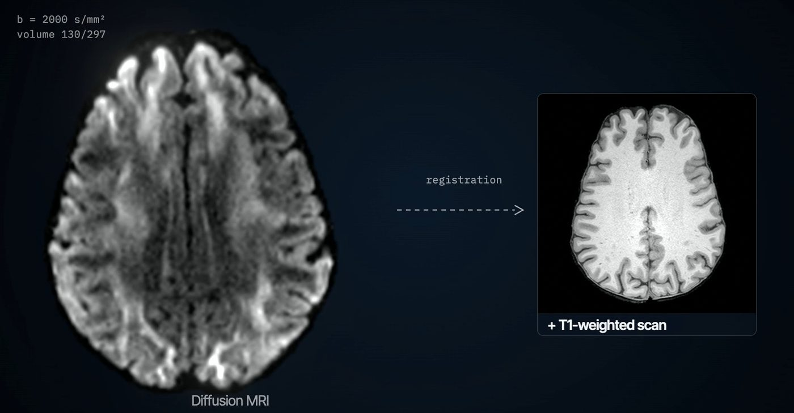
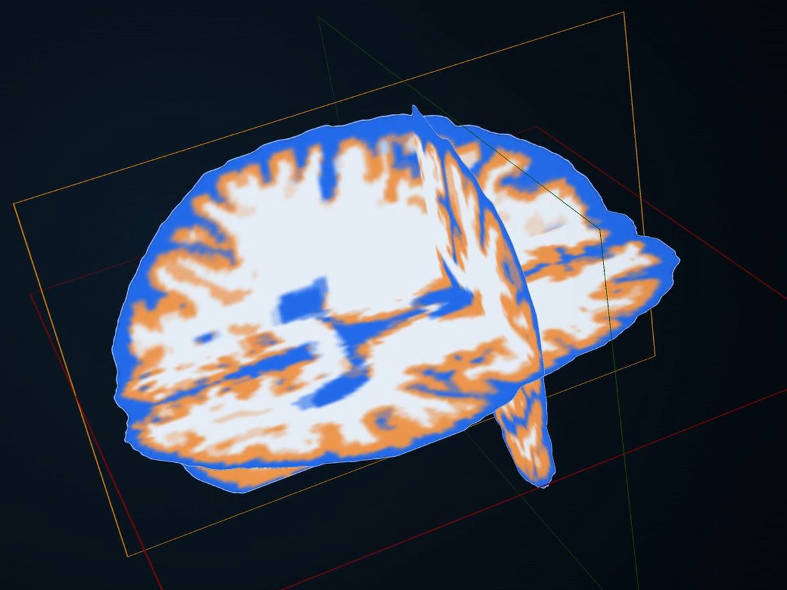
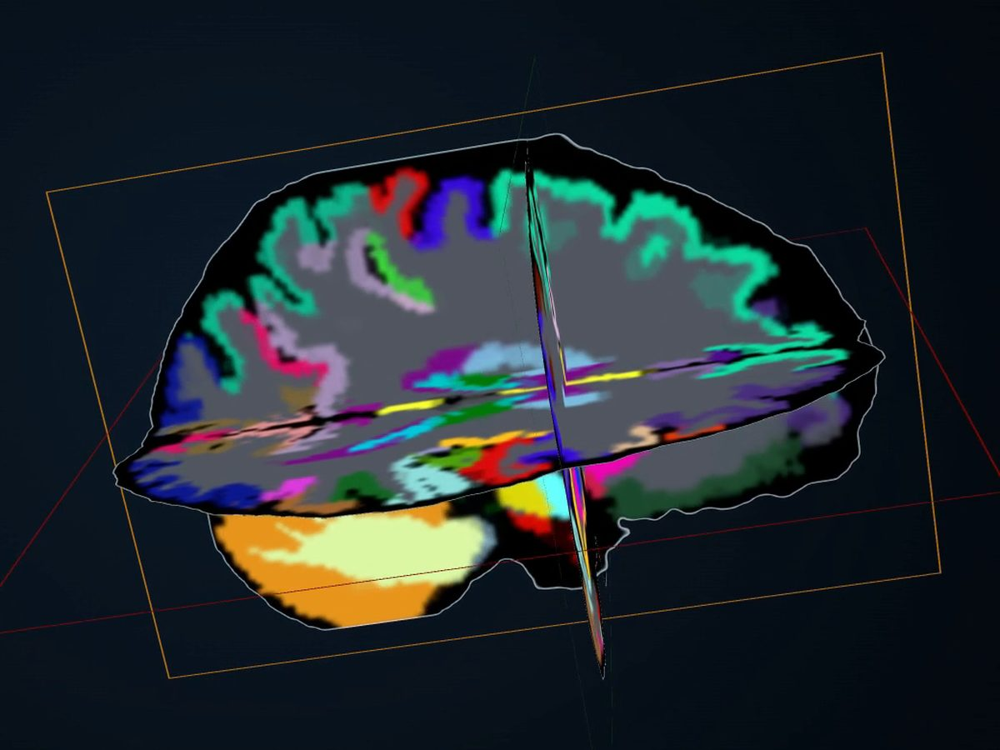
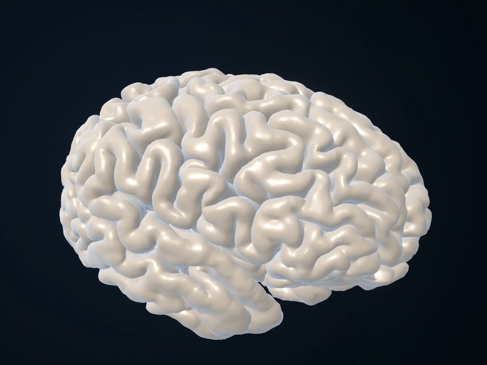
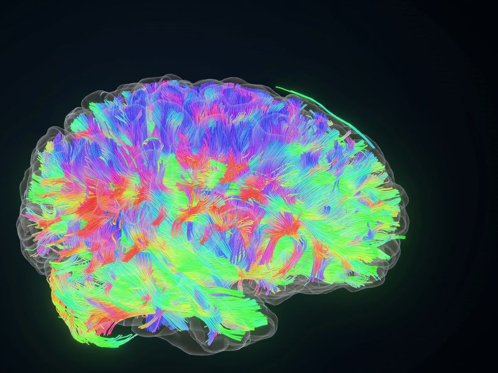
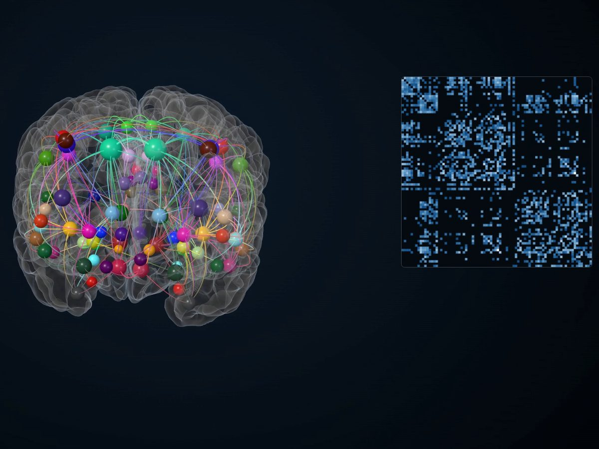
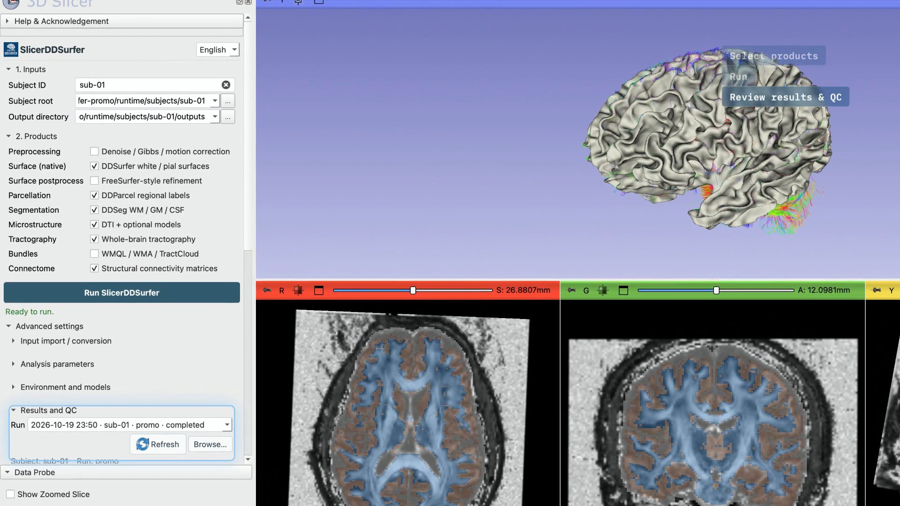

DTI · microstructure
Direction-encoded colour
Principal diffusion direction weighted by FA, from the DTI fit.
3D Slicer module · Diffusion MRI
SlicerDDSurfer reconstructs tissue labels, brain regions and cortical surfaces directly from diffusion MRI, with no T1-weighted scan needed at analysis time. The same module maps microstructure, traces white-matter pathways and builds structural connectomes.
Research software · Private pre-release · BSD-3-Clause code
The film shows one SlicerDDSurfer run on one public dataset (EDDEN sub-01). Free water, NODDI and kurtosis are optional routes; they were not run for the film.
The idea
Mapping anatomy for a diffusion study has usually meant a second, T1-weighted scan, registered into diffusion space.
SlicerDDSurfer works from the diffusion scan. DDSeg labels tissue, DDParcel labels brain regions and DDSurfer builds white and pial surfaces, all in native diffusion space.
sub-01/
input/
data.nii.gz
bvals
bvecs
nodif_brain_mask.nii.gz # optional; generation needs a supported backendA DWI series, its gradient files and an optional brain mask. DWI and mask must share one voxel grid.
‘No T1-weighted scan’ describes analysis time. The models were trained with labels derived from T1-weighted MRI.

One subject, one space
Every image here is a frame from the film. Each shows output from one SlicerDDSurfer run on one public dataset: EDDEN, OpenNeuro ds004666, subject sub-01 (CC0). The input is EDDEN’s AVG_mag series: five repeated acquisitions, averaged, so its SNR is higher than a typical single scan. The run used the b = 0 and b ≈ 1000 volumes (117 of 297).

DTI · microstructure
Principal diffusion direction weighted by FA, from the DTI fit.

DDSeg · tissue
White matter, grey matter and CSF, predicted from DTI features.

DDParcel · regions
Anatomical regions labelled in the diffusion volume.

DDSurfer · surfaces
Cortical surface meshes in native diffusion space.

Tractography · DTI
Deterministic DTI tractography. Shown: a display subset of 24,000 of 130,780 streamlines.

Connectome · DDParcel nodes
The 260 strongest of 854 edges are drawn; the matrix shows all 84 × 84 nodes.
Colours, subsets and upsampling are display choices; they change the look, not the data. Automatic QC passed for the DTI, DDSeg, DDParcel and DDSurfer stages. No expert has reviewed these outputs.
Workflows
Select only the products you need. Install dependencies for the route you select, not for every possible product.
01
02
03
04
05
In 3D Slicer

Status
DDSeg is a MATLAB-to-Python/PyTorch reimplementation. SAF and MK-Curve are unofficial Python ports of author MATLAB methods. PNL CNN masking invokes the author’s existing Python backend, not a rewritten PNL pipeline. DDSurfer runs bundled upstream Python code.
A completed run is not a clinical assessment or proof of scientific correctness.
Get started
The repository and its model-asset repository are private during pre-release. Use an authorized checkout; links into the repository need access.
git clone https://github.com/ChengjinLii/SlicerDDSurfer.git
cd SlicerDDSurfer
python3 scripts/stage_slicer_extension.py \
--install-root ~/SlicerDDSurfer-extension --link-mode copy --cleanSet --slicer-version to your Slicer version. This is a source/staging installation, not an official CPack release.
In Edit › Application Settings › Modules, add the expanded absolute path of ~/SlicerDDSurfer-extension/SlicerDDSurfer/lib/Slicer-5.10/qt-scripted-modules to Additional module paths, then restart Slicer. Local GUI validation uses Slicer 5.10.
Install SlicerDMRI and PyTorch from Slicer’s Extension Manager.
Review the asset terms first, then download only the profile you need to a writable folder outside the checkout:
python3 scripts/download_model_assets.py --profile surface \
--asset-root ~/SlicerDDSurfer-model-assets --source url \
--source-id slicerdsurfer_models_gitAvailability and SHA256 verification do not establish redistribution rights.
Use the canonical layout shown above. Gradient files must match the DWI measurements; corrected gradients must accompany motion-corrected DWI.
Cite
The SlicerDDSurfer protocol manuscript is in preparation. Cite the tested software version using CITATION.cff, together with the methods actually used.
DDSurfer
Advanced Science, 2026, e76596.
DDSeg
NeuroImage, 2021, 233, 117934.
DDParcel
IEEE Transactions on Medical Imaging, 2024, 43(3), 1191–1202.